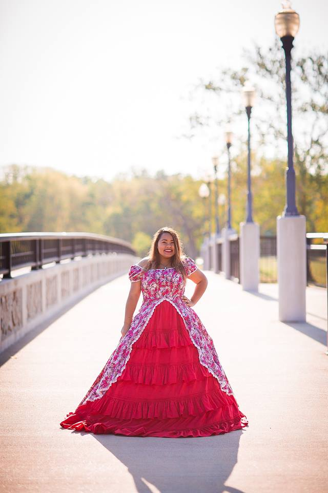
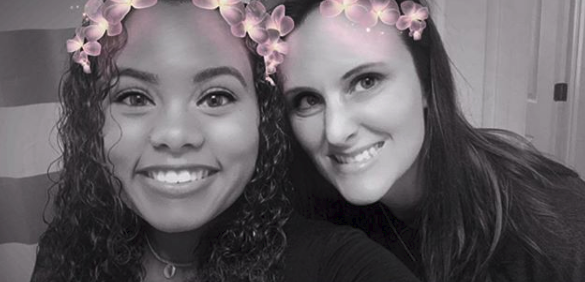
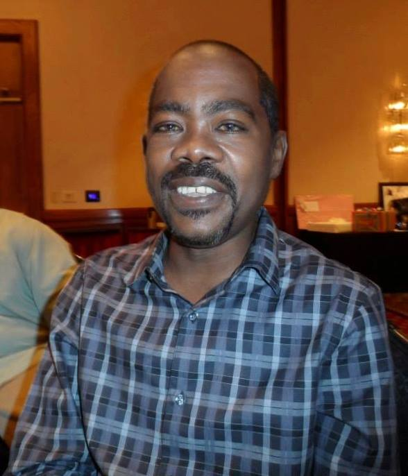
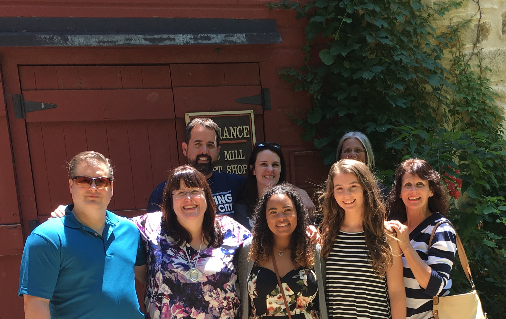

My name is Courtney. I was born and raised in Wichita, KS. I like working out, going to roller derby bouts, and reading fiction.
I like imagining that I am in the Victorian Era(thank you Jane Austen).
I am also a huge Star Trek fan!
I am an only child. I am multi-racial; on my mom's side of the family I am White and Swedish. On my dad's side of the family I am Native American and Black. I love my family and miss them dearly.
This is my mom, Amanda. I am thankful to call her my mom.
This is my late father, Willard. There's not a day that goes by that I don't miss his presence.
This is a picture of my family.
Follow Me on Instagram
Courtney's Instagram